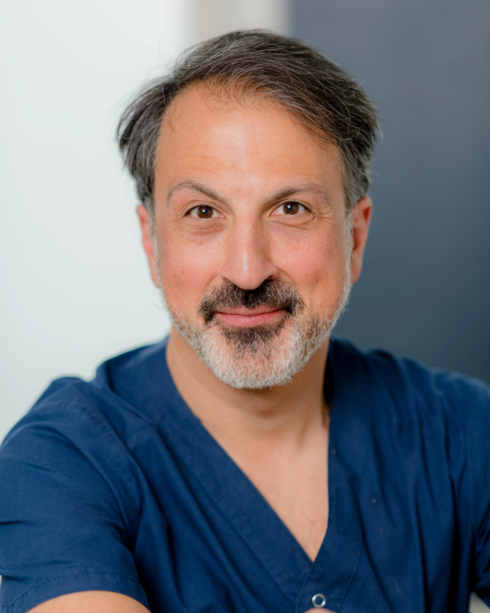

Velkommen til Bærum Lungeklinikk
Bærum Lungeklinikk er din lokale spesialistklinikk for diagnostisering, behandling og oppfølging av lungesykdommer og luftveisplager. Vi tilbyr tjenester som pustetester, allergivaksinasjon, søvnapnéutredninger og belastningstester.
Om Bærum Lungeklinikk
Bærum Lungeklinikk er en del av den offentlige spesialisthelsetjenesten. Vår lege, Dr. Saeed B. Vahedi, spesialist i indremedisin og lungesykdommer, har en driftsavtale med Helse Sør-Øst. Dette sikrer at du får tilgang til spesialisttjenester av høy kvalitet. Vi samarbeider med blant annet Akershus Universitetssykehus (Ahus), Oslo universitetssykehus (OUS) og Vestre Viken (Bærum Sykehus) HF. For å få tid hos oss, trenger du henvisning. Egenandelen er den samme som ved sykehus, med tillegg for forbruksmateriell eller medisiner. Har du frikort, betaler du ikke for egenandel for konsultasjon.
Om lungelegen
Dr. Saeed Vahedi har over 25 års erfaring innen lungemedisin, blant annet fra Vestfold Sentralsykehus, OUS Ullevål sykehus og privat praksis. Hans lange erfaring og dedikasjon til grundige undersøkelser og individuell tilpasset behandling gjør ham til en ressurs for sine pasienter. Dr. Vahedi har som mål å sikre en helhetlig tilnærming til dine plager, med dine behov i sentrum.
Moderne utstyr og korte ventetider
Bærum Lungeklinikk er utstyrt med moderne diagnostisk teknologi for å sikre nøyaktige undersøkelser og behandlinger. Vi har korte ventetider og jobber for at du skal få rask og effektiv hjelp for å bedre din helse og livskvalitet.
Kontakt oss for timebestilling
Dersom du har spørsmål om våre tjenester eller ønsker å bestille tid, er du velkommen til å kontakte oss. Vennligst merk at henvisning er nødvendig.
